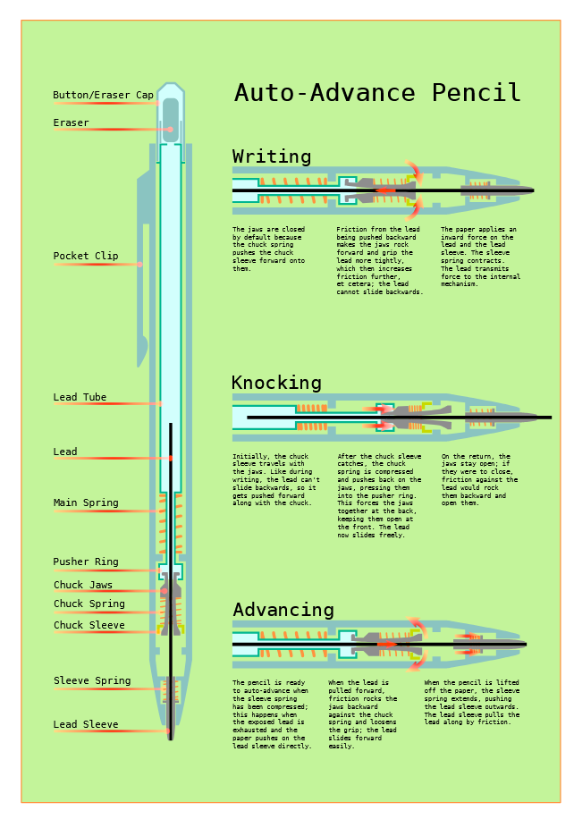
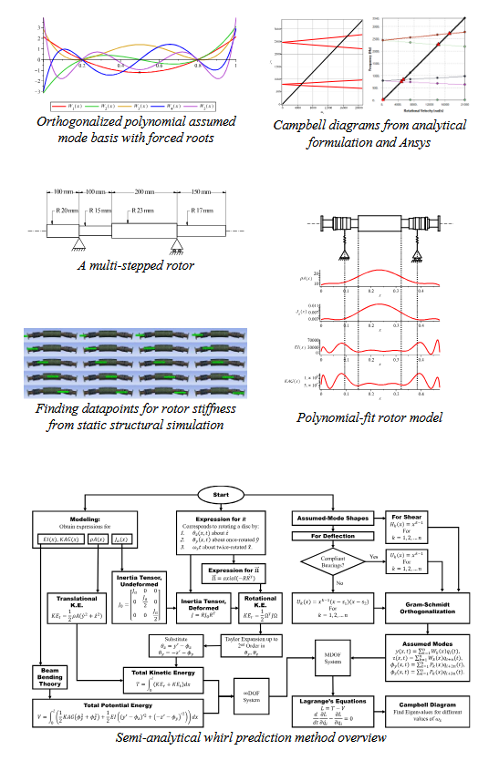
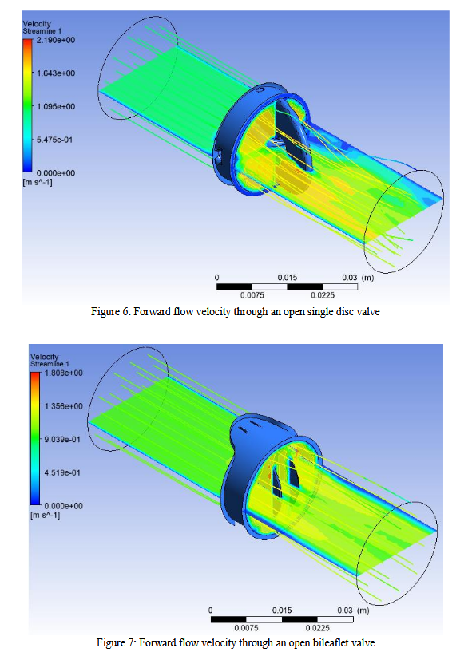
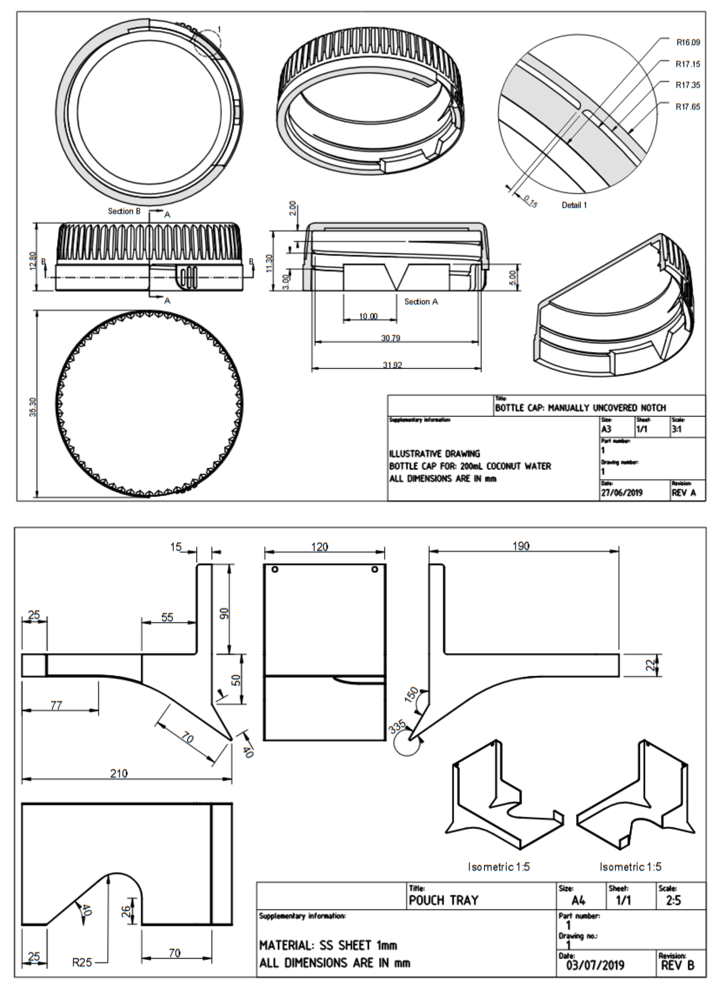
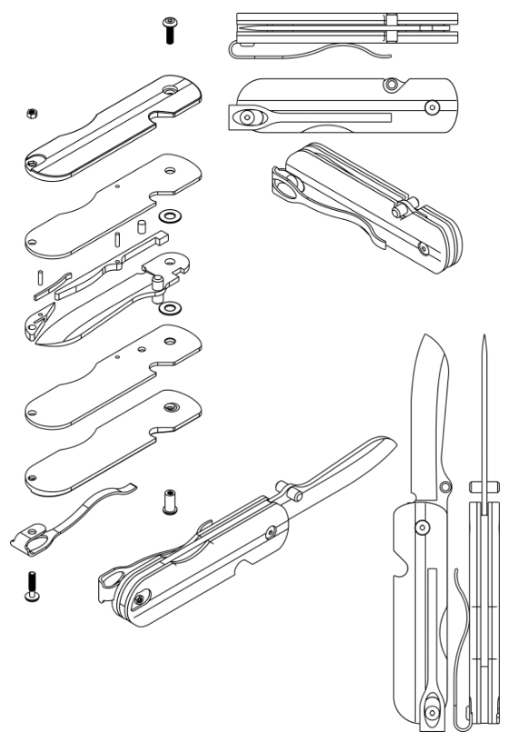
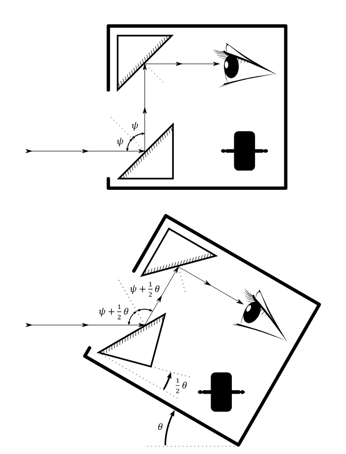
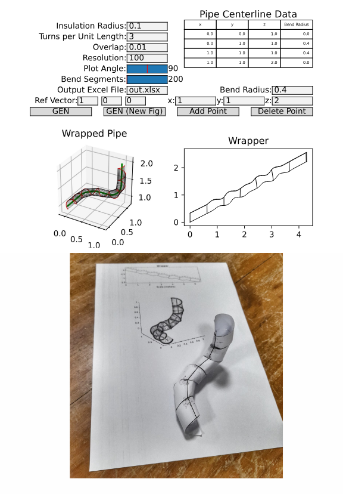
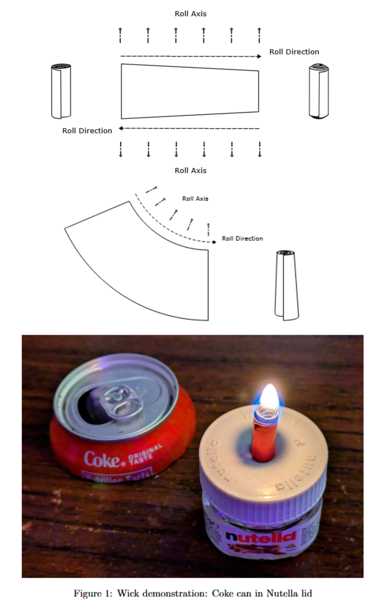

Auto-Advance Mechanical Pencil Poster
 Auto-advance mchanical pencils dispense just the right amount of lead as they write, simultaneously protecting the lead from breaking and eliminating the need to manually click or shake the pencil as the lead wears out. When I first found out about these pencils, I was fascinated by what they did but couldn't find much information about how they worked. One source I did find seemed to describe a different mechanism from what I found in pencils I bought. I therefore took one apart and attempted a "reverse-engineered" poster explaining the mechanism.
https://randomvertebrate.github.io/pdfs/auto-pencil.pdfUndergraduate Thesis: Developing a Semi-Analytical Model for High-Speed Rotor Whirl Prediction
 Most fully analytical treatments of rotor whirl are restricted to very simple rotor geometries, and have limited use while studying real-world rotors. Analysis of more complex rotors is routinely carried out in Finite Element software such as Ansys, but this is less effective at generating fundamental insights to inform the design process. This thesis develops a rotor whirl model of intermediate complexity, following some analytical insights into whirling resonance in rotors.
https://randomvertebrate.github.io/pdfs/btech-thesis.pdfSimulation of Blood Flow in Mechanical Heart Valve Prostheses
 Various designs exist for Mechanical Heart Valves, but each of them has significant differences in operation from a natural heart valve. This paper (presented at BIT Mesra's internal thermo-fluids conference ICTFSD 2022) considers representative examples of a few popular classes of MHV, and presents FEM simulations of the flow through them in vitro. A comparison is made between the simulation results for each type of valve with a focus on factors contributing to clotting - including flow velocity, shear stress and stagnation - as well as on leakage or regurgitation. A simulation-based insight is therefore developed for the relative strengths and weaknesses of each type of valve, and this insight is discussed in the context of common practices in the medical field.
https://randomvertebrate.github.io/pdfs/heart-valves.pdfInternship Report, Hector Beverages
 These are reports I submitted during my internship at Hector Beverages. One of my assignments there the design of a bottle cap intended to help customers pierce the hermetic seal on 200ml coconut water bottles. Another was the design and testing of a catch-tray to help manage drink pouches during assembly.
https://randomvertebrate.github.io/pdfs/hector.pdfUrban Pocketknife Design
 This is a conceptual design for a pocketknife suitable for Every Day Carry in urban or semi-urban environments. It is intended to be functional and serviceable, yet non-threatening and inconspicuous.
https://randomvertebrate.github.io/pdfs/knife-writeup.pdfLine-of-Sight Stabilization Gyroscope
 Line-of sight stabilization for optical devices mounted on moving vehicles can be performed using correcting mirrors coupled to a gimballed gyroscope through a 1:2 kinematic coupling. In such a system, the dependence of the response on forcing can be shown to scale with the inertia of the mirror, marking an important difference in dynamic behavior from free-gimballed gyroscopes. This is a study through numerical dynamic simulations of the error in line-of-sight correction in such a system, i.e. its performance, as affected by design parameters and the frequency and amplitude of forcing.
https://randomvertebrate.github.io/pdfs/los-gyro.pdfPipe Wrapping
 A straight strip of material (e.g. tape) can be wrapped helically around a straight length of pipe. This is not the case for pipes with bends. This is a tool I wrote to calculate a shape of strip that can be wrapped around a given pipe with arbitrary bends.
https://randomvertebrate.github.io/pdfs/pipe-wrap.pdfRolled-Metal Lamp Wick
 This was my project submission for a graduate Microfluidics course. My idea was to create a combination of macro and micro-channels between successive sheets of rolled sheet metal. The result is a working metal lamp wick with several tweakable design parameters. I tested a few different wicks and commented on the effects of packing tensity, taper, and mouth profile on various aspects of performance or flame behavior.
https://randomvertebrate.github.io/pdfs/spiral-wick.pdf